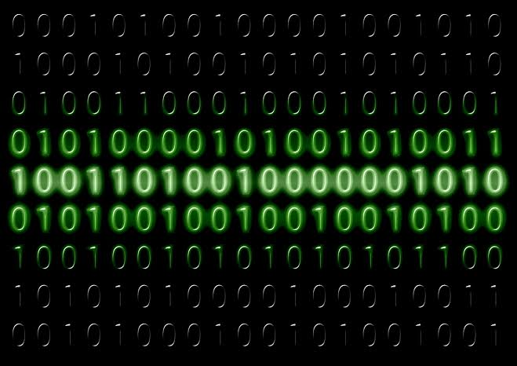

Het binaire stelsel
Computers werken uiteindelijk met heel veel nullen en enen. Dit noemen we het binaire stelsel. Het binaire stelsel gebruikt dus maar twee cijfers: 0 en 1.

0 en 1 vormen de basis van digitale informatie
Hoe werkt het?
In het gewone decimale stelsel gebruiken we de cijfers 0 tot en met 9. In het binaire stelsel zijn er maar twee mogelijkheden: 0 en 1.
Elke positie in een binair getal heeft een waarde die een macht van 2 is. Van rechts naar links zijn de waarden 1, 2, 4, 8, 16, 32, 64, 128 enzovoort.
| Positie | 128 | 64 | 32 | 16 | 8 | 4 | 2 | 1 |
|---|---|---|---|---|---|---|---|---|
| Getal | 0 | 0 | 1 | 0 | 1 | 0 | 1 | 0 |
Het binaire getal 00101010 is bijvoorbeeld: 32 + 8 + 2 = 42. Je telt alleen de positiewaarden op waar een 1 staat.
🎮 Binary Bonanza
Met Binary Bonanza kun je op een leuke manier oefenen met binaire getallen. Het spel helpt je om beter te begrijpen hoe het binaire stelsel werkt.
🎬 Video over het binaire stelsel
Bekijk de volledige video voor extra uitleg over het binaire stelsel en hoe je met binaire getallen werkt.